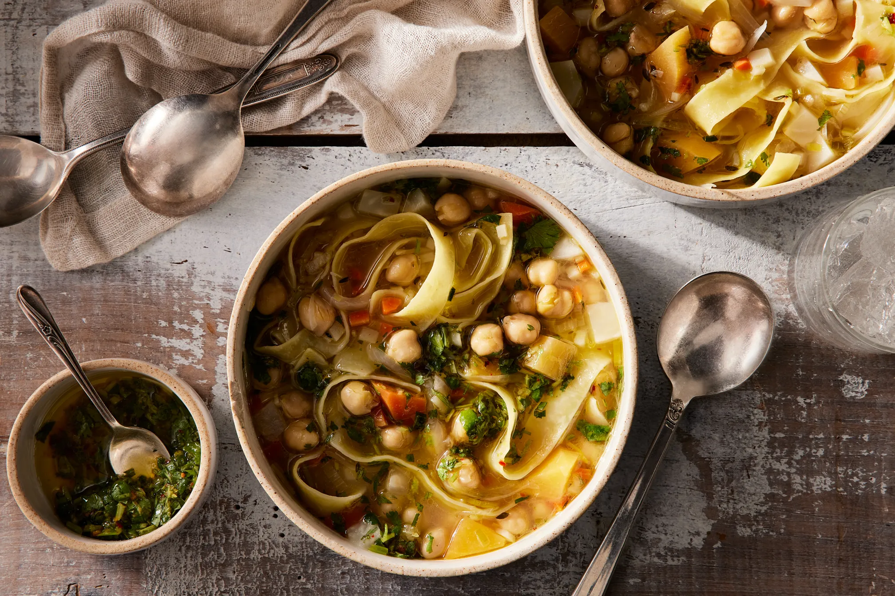

Chickpea Soup

Chickpea Soup with Noodles
A hearty vegan soup that's easy to make with whatever vegetables suit your fancy.
Ingredients
- EVOO
- 3 sprigs of thyme
- 1 sliced yellow onion
- 1 thinly sliced leek
- 4 garlic cloves, minced
- kosher salt
- 1 cup white wine
- 2 tablespoons white miso
- 2 carrots
- 2 parsnips
- 1 rutabaga
- 3 stalks of celery, sliced
- 2 cups chickpeas
- 1 1/2 teaspoons red pepper flakes
- zest and juice of 1 lemon
- 10 sprigs of parsley, chopped
- 4oz pappardelle
Steps
- In a soup pot, heat a glug of olive oil over medium heat. Add the thyme (or herbs de Provence) and briefly fry, 10 to 15 seconds.
- Add the onion, leek, and garlic, plus a big pinch of salt, and reduce heat to medium-low. Sweat the mixture until soft, about 7 minutes.
- Add the white wine and reduce by half.
- Dissolve the miso into 8 cups of water. If it doesn't blend completely, don't worry, it will as the soup simmers—this just helps it along.
- Add the root vegetables, chickpeas, and miso water. Bring to a boil, reduce to a simmer, and cook until all the vegetables are tender, about 20 minutes.
- Meanwhile, in a small frying pan, lightly toast the red pepper flakes over medium-high heat until fragrant, about 30 seconds.
- In a separate bowl, combine 1/2 cup of olive oil, the lemon zest, lemon juice, parsley, and a pinch of salt. Add the warm red pepper to the mixture.
- When the vegetables are tender, taste and adjust the salt as desired. Add the pasta and simmer until tender, 6 to 8 minutes.
- Divide the soup into 4 bowls and top with a hefty spoonful of the parsley relish.